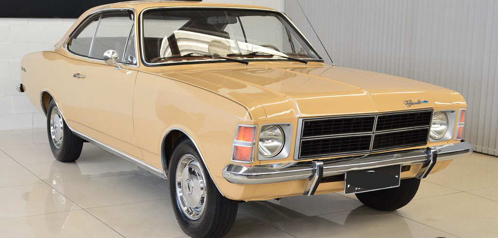

comodoro
Ainda no ano de 1975, somado a remodelação visual da linha e do lançamento da Caravan, houve o lançamento de uma nova versão de luxo (em substituição a Gran Luxo), batizada de Comodoro. A versão trazia diferenciais como o interior com apliques de jacarandá, meio teto de vinil Las Vegas (exclusivo para o modelo coupé) e um filete pintado na linha de cintura da carroceria. Em 1980, a versão Comodoro seria reposicionada na linha como opção intermediária na linha Opala (permanecendo até o encerramento da linha) em função do lançamento da versão Diplomata, mas como versão topo de linha para a station wagon Caravan. Com o lançamento da linha 1988, a versão Comodoro seria rebatizada Comodoro SL/E.